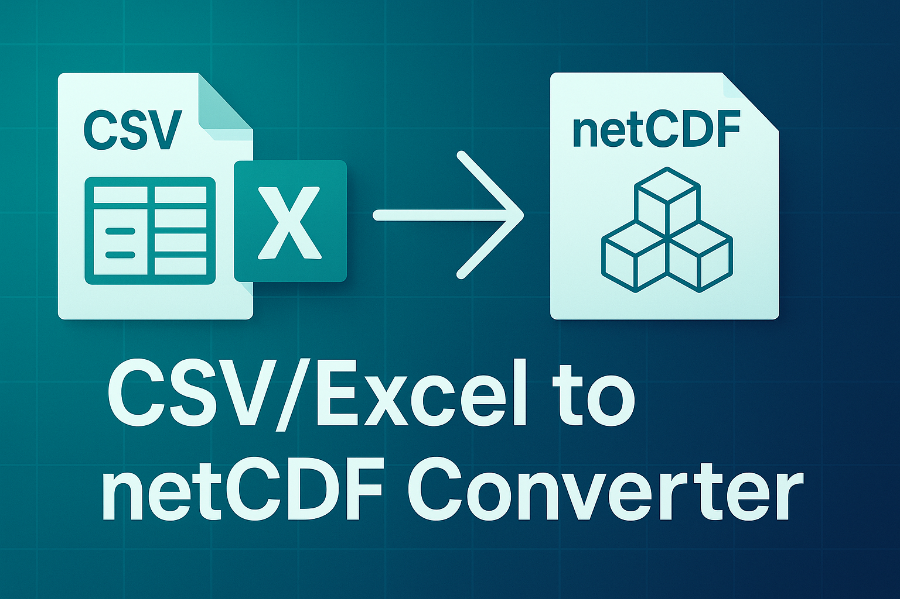
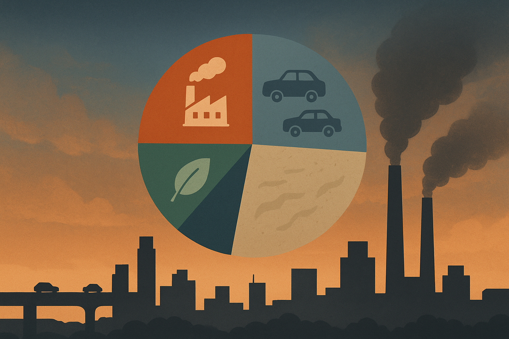
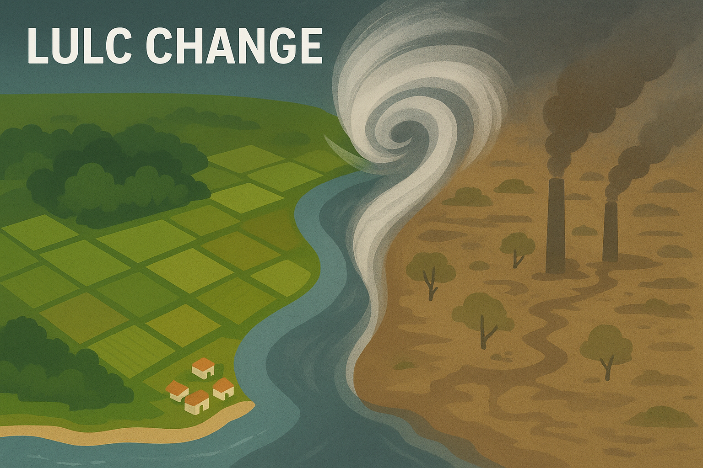

Here are some of my recent works and research projects

June 2025
NetCDF Generator is a Python-based GUI application that simplifies the conversion of tabular data (CSV/Excel) into structured NetCDF4 datasets with full multi-dimensional support. Built on the Xarray backend, it enables researchers, scientists, and engineers to seamlessly prepare climate, environmental, or geospatial data for advanced modeling and analysis without complex coding. With features like custom grid resolution, NaN/zero handling, and light/dark theme switching, it ensures both flexibility and usability.
June 2025
OpenTab Saver is a Chrome extension designed to solve the common problem of tab overload by letting you capture, organize, and restore your open browser tabs anytime. You can take manual or automated snapshots of all your tabs, neatly grouped by date, and easily restore them later with a single click. With export options to CSV, full JSON backups, and a clean, intuitive interface, it ensures that your browsing history becomes an organized knowledge resource rather than digital clutter. This makes it especially valuable for students, researchers, and professionals who juggle multiple workflows and want to boost productivity while keeping their browser tidy.

Dec 2022
Carried out a comprehensive study using ambient air quality data from the year 2019 to identify and characterize the sources of atmospheric pollutants through the U.S. EPA’s Positive Matrix Factorization (PMF) model. Investigated seasonal variations in pollutant levels to understand temporal emission patterns. Used the HYSPLIT model to compute air mass back trajectories and performed PSCF (Potential Source Contribution Function) analysis to assess potential source regions. Data preprocessing and model input preparation were done in Python, while R was used for PSCF plotting and results visualization.

June 2022
Conducted a geospatial analysis to assess the impact of Cyclone Titli on land use and land cover in Brahmapur city as part of coursework. Utilized Sentinel-2 satellite imagery and processed data using the Semi-Automatic Classification Plugin (SCP) in QGIS. Generated false color composites, performed supervised classification, and mapped LULC changes before and after the cyclone. The project demonstrated the role of remote sensing and GIS in disaster impact assessment.
June 2022
Evaluated the operational efficiency of 441 urban water utilities across four Indian states using Data Envelopment Analysis (DEA). Identified top-performing utilities through scorecard analysis and applied DEA to assess input-output efficiency. Findings revealed that Maharashtra and Gujarat utilities performed better than those in Chhattisgarh and Telangana, with significant theoretical potential for cost and staff optimization. The study highlighted critical inefficiencies in municipal water supply systems and the need for sustainable resource management
Professional journey and work experience
Feb 2025 - Present
Conducting monthly ambient air mercury sampling using glass tube cartridges, as part of a monitoring initiative. Responsible for collecting air samples along with recording associated environmental parameters such as temperature, humidity, and atmospheric pressure. Ensured proper handling, labeling, and documentation of samples in accordance with standard protocols.
Feb 2025 - June 2025
Conducted road dust sampling across 40+ locations in Hyderabad as part of a Telangana Pollution Control Board (TGPCB) study to evaluate the efficiency of mechanical road sweeping machines. Performed laboratory analyses including Loss on Ignition (LOI), pH, silt content, electrical conductivity, and particle size distribution. Calculated performance parameters and interpreted results to assess cleaning effectiveness. Used QGIS to map sampling locations and Python for data analysis and visualization.
Jan 2023 - Present
Conducted weekly rainwater sampling to support mercury wet deposition monitoring under the Asia Pacific Mercury Monitoring Network (APMMN), through my involvement under a participating research group. Handled sample collection, labeling, and documentation in accordance with network protocols.